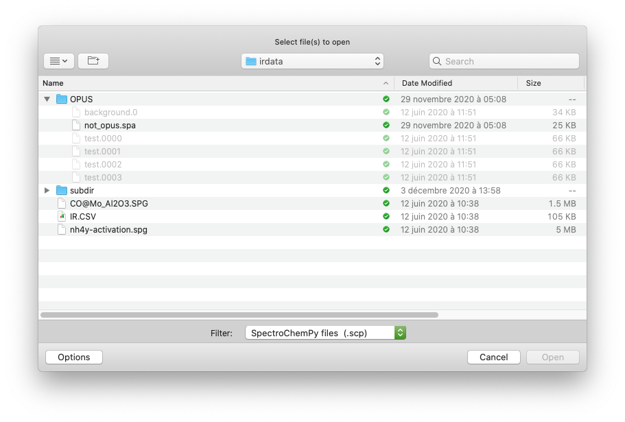

Import Data¶
This tutorial shows how to import data in SpectroChemPy (SCPy).
First, let’s import spectrochempy as scp in the current namespace, so that all spectrochempy commands will be called as scp.method(<method parameters>).
[1]:
import spectrochempy as scp
![](data:image/png;base64,iVBORw0KGgoAAAANSUhEUgAAABgAAAAYCAYAAADgdz34AAAAAXNSR0IArs4c6QAAAAlw
SFlzAAAJOgAACToB8GSSSgAAAetpVFh0WE1MOmNvbS5hZG9iZS54bXAAAAAAADx4OnhtcG1ldGEgeG1sbnM6eD0iYWRvYmU6bnM6
bWV0YS8iIHg6eG1wdGs9IlhNUCBDb3JlIDUuNC4wIj4KICAgPHJkZjpSREYgeG1sbnM6cmRmPSJodHRwOi8vd3d3LnczLm9yZy8x
OTk5LzAyLzIyLXJkZi1zeW50YXgtbnMjIj4KICAgICAgPHJkZjpEZXNjcmlwdGlvbiByZGY6YWJvdXQ9IiIKICAgICAgICAgICAg
eG1sbnM6eG1wPSJodHRwOi8vbnMuYWRvYmUuY29tL3hhcC8xLjAvIgogICAgICAgICAgICB4bWxuczp0aWZmPSJodHRwOi8vbnMu
YWRvYmUuY29tL3RpZmYvMS4wLyI+CiAgICAgICAgIDx4bXA6Q3JlYXRvclRvb2w+bWF0cGxvdGxpYiB2ZXJzaW9uIDIuMS4wLCBo
dHRwOi8vbWF0cGxvdGxpYi5vcmcvPC94bXA6Q3JlYXRvclRvb2w+CiAgICAgICAgIDx0aWZmOk9yaWVudGF0aW9uPjE8L3RpZmY6
T3JpZW50YXRpb24+CiAgICAgIDwvcmRmOkRlc2NyaXB0aW9uPgogICA8L3JkZjpSREY+CjwveDp4bXBtZXRhPgqNQaNYAAAGiUlE
QVRIDY1We4xU1Rn/3XPuYx47u8w+hnU38hTcuoUEt/6D2y4RB0ME1BoEd9taJaKh9CFiN7YGp7appUAMNmktMZFoJTYVLVQ0smsy
26CN0SU1QgsuFAaW3WVmx33N677O6XfuyoIxTXqSO/fec+75fd93vt/3/UbDV0aKSZmCpkFMLz3T9utuu2N+o98aDSMBKVAo89z5
y+zEz3ZafcCOfvWdlGCalqKn1Bf71CygTd+mf1esSOnpdMpTb+vWpTZuWVfe3jLPa5tzHYNm0T5N0gpdkkHaDBeGBU6d1/t/fyS8
+/CbqdfUvmsx1PuMgc2bNxv79u1zgd31r+7JH1jbIZKxWRXAcYUQ8IWvBfBXNjEuJWPgMA02NR7C3/pYT9fjdZ3A9tGrWF8YSJHn
qcDz3y7q2T967PZv+gnYJdd1mEZ+62zGDQV/dQgKhmLzDNOXCEWM3j6eTT5Y3w78dOBKJLR1PQf+4ivPj76UPZnssBN+wbM9Aet/
AV81Mf1EEULXYfOobvX2WWQk0aoioXwwSmirOlioY0mu8BIouzYl7P8GV3vpqCCEZvlFz769w08oLDWvyKIyL1asSm28d6WfzA97
ztvvV1kexUMsmhlkULEkuGYmFYC6AvfUrITnwUKl5K79lkjeSSRRTCTbQPd95e1WzMbZSya74XoXAxctCllCnbECMOjZNGRwvzIX
nD85wbkMmKK+U045Dtdi8Qp+SAxU2GTg2bYlC9224pgvmSb54vkVTBQYyhUt2KjAMyMmPjwRQW5Mh2WKwJhlBh6jVGagFM84wZnQ
4bpC0Rt4pk1PbSt0NDcxDA5xryosDHWgtbM0DGZDWLSoiDMDYeQnGVrmOThxLozB0RAaahzkJzjKNqcIQBymJFMkOlN8Dqjpg0XY
Tx5xO/QbmmUrqIjGJznq47TqTaClKYfjp+PInLMwnOdYvtQBZ2XcunQY+VwIo4U4muoFEjVEFE6lQyEUKzHYfgQG9ylCyngU+Cxj
tOqxCDGHcCsOMCs6iQul5ZiStdATYxjMZXDLTUVwLY8Jey4uOh2IxjwsrP8UXJYxUrkZrghBahzV5iXU6gNkq0Z1EzIsUBUSCV2n
EOHo0LVxHCpuxabJJdhi5PFnvw5vLXwXIfNZvD/+JNo/X40NegE54sUaazl+UL8XD1x+FB9Ijjt4EQfdGN6J/x131LwIV9ap/AYs
0x1fz1ZKFbh6A7qKy/By9Dg6G36Ep91vUJJ15Cqr0Z67E8/HzmBrw1OwxWyM+3Mo6BAuSB17oyfx0Oyl2DN0Hqs/70Cx6hBCvESF
UY1ShWXZZEE7OTAYxZzaPH4TuoiusZvRnunFy2NbiHYuBp2vB66srX4vMEjpRKPxKXmnoQ4+Mn4DPiv8CYcrs3GfNUXJLtM+alSO
hrMj/KT+wBNW3+E/2liywNO3iSflbaFva/+stGDTxE0E9Sjaox8HBhxpEamzMGSEaFKg+mjEddzDh1MxTDq3YV1kGBsjfwW3S9Cq
anjmko+ndlb1UR3s6K8JlfphNWq9Ew/7c61T2BB/EbcaNkb8GBaE0tANH7/M34PLdhJDzjIcL9xPbdTG6zyM72Y+wXPHmvB489No
fm0b5HnbQ9Rgp/7DSSd29AeVvPeNyK6JcYl/yQVi5dBjuGvoV/gaJe47s45QUxrDmcYX0MBsdF7egvXZ7+O0vZA4X8QmOQWjlSK7
RDz5wIM30gp9UbWcGjXxhzdDu1SiNSpx6kcQB57rPnr/3dlkZarWLnlRq5oPET1dOCIOk4wALib9eeS5iygfhkd09H0DWphB/+gs
+PcOAS+ssrFmmXXgVfR0de9cpbAJfH3Q1jofW9DZk56dDcVsq9YcsoUMEd1qyLoT3BX1YiyHMJuk97hyjqIoE91t+NcTLeN0ZrfM
oXatZbu6G0h4VG+ibqq0IJVK6cAjo6serG3vSUezCMct0yQeSOFJSUImqb2qbknUpDqlZxE0QZ+ZUpSlZx79h4Nda6zef9dlk121
JDjbR5XggPRZlRnS6bRQRtLpn4++cuie/Yvn2svmNxuLw9WCcYIl4fEoTEGiSTUqJdfgU+8ROqf1iMkLzS389YtNPXc/PH8l8ONB
JZkHD+4JtD04HmVEDWWErmBhzV2/2LB1bemJG6krzv2S6NOHUgtEP0Oif5pE/3fHoruP7N8RiP61GArzSwbUhJJQpXJKiKbfr/3b
IhKq76sKPUdF9NW/LSqfSn6vjv8C45H/6FSgvZQAAAAASUVORK5CYII=)
|
SpectroChemPy's API - v.0.4.8.dev4 © Copyright 2014-2022 - A.Travert & C.Fernandez @ LCS |
Dialog boxes¶
Retrieving Files and Directories, in day-to-day work is often made through Dialog Boxes. While we do not recommend this procedure for advanced usage (see below), it is quite easy to do that with SCPy. To do so, we can use the read function which open a dialog, allowing the selection of data file form various origin. By default, the native SCPy type of data is proposed (file suffix: .scp). The desired type of files to display can be chosen in a dropdown field.
[2]:
X = scp.read()
The dialog box such as shown in this image:

The dialog Box allows selecting the file which data will be loaded in the variable X. Try for instance to run the cell below, and select an omnic spg datafile (select the .spg extension), which you can find in the irdata directory.
Tip
the dialog box does not necessarily pop up in the foreground: check your task bar !
Printing the returned NDDataset object X should read like this, with indication of the dataset shape, i.e., the y and x dimension sizes:
[3]:
print(X)
NDDataset: [float64] a.u. (shape: (y:55, x:5549))
The size of the y and x dimension will depend, of course, of the file that you have selected ! If you did not select any file (e.g., by pressing ‘cancel’ in th Dialog Box), the result will be None, as nothing has been loaded in X.
Note
By default, the Dialog Box opens in the last directory you have used. However, if a directory path is specified, the dialog should open from this diectory.
[4]:
X = scp.read_omnic("irdata/subdir")
print(X)
WARNING: Only implemented for rapidscan
AttributeError: 'NoneType' object has no attribute 'shape'
See below for more information
At the time of writing this tutorial (SpectroChemPy v.0.1.23), the following commands will behave similarly:
readto open any kind of recognised data files based on the file suffix (e.g., *.spg, etc…)read_omnicto open omnic (spa and spg) filesread_opusto open Bruker Opus (*.0, …) filesread_labspecto open LABSPEC6 files - this assumes they have been exported as *.txt filesread_topspinto open Bruker Topspin NMR filesread_csvto open csv filesread_jcampto open an IR JCAMP-DX datafileread_matlabto open MATLAB (.mat) files including Eingenvector’s Dataset objects
Additionally
read_dirto open readable files in a directory
The list of readers available will hopefully increase in future SCPy releases:-)
If successful, the output of the above cell should read something like
Out[2] NDDataset: [float64] a.u. (shape: (y:4, x:5549))
Import with explicit directory or file pathnames¶
While the use of Dialog Box seems at first ‘user-friendly’, you will probably experience that this is often NOT efficient because you will have to select the file each time the notebook (or the script) is run… Hence, the above commands can be used with the indication of the path to a directory, and/or to a filename.
If only a directory is indicated, the dialog box will open in this directory.
Note that on Windows the path separator is a backslash \. However, in many contexts, backslash is also used as an escape character in order to represent non-printable characters. To avoid problems, either it has to be escaped itself, a double backslash or one can also use raw string literals to represent Windows paths. These are string literals that have an r prepended to them. In raw string literals the \ represents a literal backslash: r'C:\users\Brian':
For instance, on Windows systems, the two following commands are fully equivalent:
X = scp.read_omnic(directory='C:\\users\\Brian')
or
X = scp.read_omnic(directory=r'C:\users\Brian')
and will open the dialog box at the root directory of the C: drive.
You can avoid using the form \\ or the use of raw strings by using conventional slash /. In python, they play the path separator role, as well in Windows than in other UNIX-based system (Linux, OSX, …)
X = scp.read_omnic(directory='C:/users/Brian')
If a filename is passed in argument, like here:
X = scp.read_omnic('wodger.spg', directory='C:/')
then SpectroChemPy will attempt opening a file named wodger.spg supposedly located in C:\.
Imagine now that the file of interest is actually located in C:\users\Brian\s\Life. The following commands are all equivalent and will allow opening the file:
using only the full pathname of the file:
X = scp.read_omnic('C:/users/Brian/s/Life/wodger.spg')
or using a combination of directory and file pathnames:
X = scp.read_omnic('wodger.spg', directory='C:/users/Brian/s/Life'
X = scp.read_omnic('Life/wodger.spg', directory='C:/users/Brian/s')
etc…
A good practice: use relative paths¶
The above directives require explicitly writing the absolute pathnames, which are virtually always computer specific. If, for instance, Brian has a project organised in a folder (s) with a directory dedicated to input data (Life) and a notebook for preprocessing (welease.ipynb) as illustrate below:
C:\users
| +-- Brian
| | +-- s
| | | +-- Life
| | | | +-- wodger.spg
| | | +-- welease.ipynb
Then running this project in John’s Linux computer (e.g. in \home\john\s_copy) will certainly result in execution errors if absolute paths are used in the notebook:
OSError: Can't find this filename C:\users\Brian\s\life\wodger.spg
In this respect, a good practice consists in using relative pathnames in scripts and notebooks. Fortunately, SpectroChemPy readers use relative paths. If the given path is not absolute, then SpectroChemPy will search in the current directory. Hence, the opening of the spg file from scripts in welease.ipynb can be made by the command:
X = scp.read_omnic('Life/wodger.spg')
or:
X = scp.read_omnic('wodger.spg', directory='Life')
Good practice: use os or pathlib modules¶
In python, working with pathnames is classically done with dedicated modules such as os or pathlib python modules. With os we mention the following methods that can be particularly useful:
import os
os.getcwd() # returns the absolute path of the current working directory preferences.datadir
os.path.expanduser("~") # returns the home directory of the user
os.path.join('path1','path2','path3', ...) # intelligently concatenates path components
# using the system separator (`/`or `\\`)
Using Pathlib is even simpler:
from pathlib import Path
Path.cwd() # returns the absolute path of the current working directory
Path.home() # returns the home directory of the user
Path('path1') / 'path2' / 'path3' / '...' # intelligently concatenates path components
The interested readers will find more details on the use of these modules here: - os - Miscellaneous operating system interfaces - pathlib — Object-oriented filesystem paths
Another default search directory: datadir¶
Spectrochempy also comes with the definition of a second default directory path where to look at the data: the datadir directory. It is defined in the variable preferences.datadir which is imported at the same time as spectrochempy. By default, datadir points in the ‘scp_data:nbsphinx-math:testdata’ folder of SpectroChemPy:
[5]:
DATADIR = scp.preferences.datadir
DATADIR
[5]:
PosixPath('/home/runner/.spectrochempy/testdata')
DATADIR is already a pathlib object and so can be used easily
[6]:
X = scp.read_omnic(DATADIR / "wodger.spg")
It can be set to another pathname permanently (i.e., even after computer restart) by a new assignment:
scp.preferences.datadir = 'C:/users/Brian/s/Life'
This will change the default value in the SCPy preference file located in the hidden folder .spectrochempy/ at the root of the user home directory.
Finally, by default, the import functions used in Sepctrochempy will search the data files using this order of precedence:
try absolute path
try in current working directory
try in
datadirif none of these works: generate an OSError (file or directory not found)
File selector widget¶
A widget is provided to help with the selection of file names or directory.
[7]:
datadir = scp.preferences.datadir
fs = scp.FileSelector(path=datadir, filters=["spg", "spa"])
fs
---------------------------------------------------------------------------
AttributeError Traceback (most recent call last)
File /usr/share/miniconda/envs/scpy/lib/python3.9/site-packages/IPython/core/formatters.py:921, in IPythonDisplayFormatter.__call__(self, obj)
919 method = get_real_method(obj, self.print_method)
920 if method is not None:
--> 921 method()
922 return True
File /usr/share/miniconda/envs/scpy/lib/python3.9/site-packages/spectrochempy/widgets/fileselector.py:86, in Base._ipython_display_(self, **kwargs)
77 data = {
78 "text/plain": plaintext,
79 "application/vnd.jupyter.widget-view+json": {
(...)
83 },
84 }
85 IPython.display.display(data, raw=True)
---> 86 self.widget._handle_displayed(**kwargs)
AttributeError: 'VBox' object has no attribute '_handle_displayed'
[7]:
To get widget to display, you must install ipy/jupyter-widgets, run in a notebook and, in the case of jupyter-lab, install the jlab extension.
After validation of the selection, one can read the path and name of the selected files.
[8]:
fs.value, fs.path, fs.fullpath
[8]:
(None,
PosixPath('/home/runner/.spectrochempy/testdata'),
PosixPath('/home/runner/.spectrochempy/testdata'))